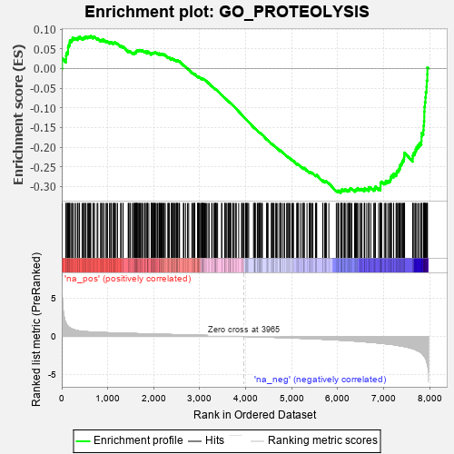

| | | Dataset | 7d |
| Phenotype | NoPhenotypeAvailable |
| Upregulated in class | na_neg |
| GeneSet | GO_PROTEOLYSIS |
| Enrichment Score (ES) | -0.3162566 |
| Normalized Enrichment Score (NES) | -1.113349 |
| Nominal p-value | 0.20181635 |
| FDR q-value | 0.73365855 |
| FWER p-Value | 1.0 |
Table: GSEA Results Summary

Fig 1: Enrichment plot: GO_PROTEOLYSIS
Profile of the Running ES Score & Positions of GeneSet Members on the Rank Ordered List
| PROBE | GENE SYMBOL | GENE_TITLE | RANK IN GENE LIST | RANK METRIC SCORE | RUNNING ES | CORE ENRICHMENT | | 1 | ST14 | | | 7 | 5.713 | 0.0262 | No |
| 2 | WFDC8 | | | 91 | 1.777 | 0.0237 | No |
| 3 | UBE2K | | | 94 | 1.739 | 0.0317 | No |
| 4 | TRIM2 | | | 100 | 1.628 | 0.0388 | No |
| 5 | ECEL1 | | | 127 | 1.412 | 0.0421 | No |
| 6 | HTRA4 | | | 137 | 1.341 | 0.0473 | No |
| 7 | DESI1 | | | 138 | 1.332 | 0.0536 | No |
| 8 | CASP6 | | | 145 | 1.300 | 0.0590 | No |
| 9 | AXIN1 | | | 166 | 1.159 | 0.0619 | No |
| 10 | BUB3 | | | 172 | 1.143 | 0.0667 | No |
| 11 | PZP | | | 178 | 1.129 | 0.0714 | No |
| 12 | SPSB4 | | | 214 | 1.019 | 0.0716 | No |
| 13 | UFSP2 | | | 230 | 0.981 | 0.0743 | No |
| 14 | DCST1 | | | 237 | 0.959 | 0.0781 | No |
| 15 | HGF | | | 276 | 0.870 | 0.0772 | No |
| 16 | JKAMP | | | 310 | 0.804 | 0.0767 | No |
| 17 | CLN5 | | | 346 | 0.751 | 0.0756 | No |
| 18 | GSK3A | | | 351 | 0.745 | 0.0786 | No |
| 19 | CLSPN | | | 379 | 0.719 | 0.0785 | No |
| 20 | BAX | | | 387 | 0.711 | 0.0809 | No |
| 21 | SUFU | | | 443 | 0.665 | 0.0769 | No |
| 22 | LRP1 | | | 470 | 0.648 | 0.0765 | No |
| 23 | CDC20 | | | 480 | 0.644 | 0.0784 | No |
| 24 | SPSB1 | | | 494 | 0.631 | 0.0797 | No |
| 25 | GET4 | | | 520 | 0.623 | 0.0793 | No |
| 26 | HTRA2 | | | 527 | 0.621 | 0.0815 | No |
| 27 | NLE1 | | | 565 | 0.609 | 0.0795 | No |
| 28 | CCNB1 | | | 581 | 0.601 | 0.0804 | No |
| 29 | FBXW8 | | | 601 | 0.594 | 0.0807 | No |
| 30 | NEMF | | | 620 | 0.589 | 0.0812 | No |
| 31 | GLMN | | | 632 | 0.583 | 0.0825 | No |
| 32 | FAF2 | | | 680 | 0.566 | 0.0790 | No |
| 33 | ATP23 | | | 691 | 0.562 | 0.0803 | No |
| 34 | VASH1 | | | 712 | 0.556 | 0.0803 | No |
| 35 | CLN8 | | | 769 | 0.539 | 0.0755 | No |
| 36 | UCHL3 | | | 785 | 0.536 | 0.0761 | No |
| 37 | NRDC | | | 845 | 0.521 | 0.0708 | No |
| 38 | AMFR | | | 856 | 0.518 | 0.0719 | No |
| 39 | IGBP1 | | | 869 | 0.514 | 0.0728 | No |
| 40 | HCFC1 | | | 902 | 0.506 | 0.0710 | No |
| 41 | TMTC3 | | | 903 | 0.506 | 0.0734 | No |
| 42 | ADRM1 | | | 948 | 0.496 | 0.0700 | No |
| 43 | WDR48 | | | 975 | 0.489 | 0.0689 | No |
| 44 | EIF3F | | | 995 | 0.485 | 0.0687 | No |
| 45 | AKT1 | | | 1040 | 0.476 | 0.0651 | No |
| 46 | TAF9 | | | 1046 | 0.475 | 0.0667 | No |
| 47 | AIFM1 | | | 1072 | 0.469 | 0.0657 | No |
| 48 | FOXK2 | | | 1081 | 0.467 | 0.0668 | No |
| 49 | NTAN1 | | | 1120 | 0.459 | 0.0640 | No |
| 50 | SRC | | | 1128 | 0.459 | 0.0653 | No |
| 51 | TPP2 | | | 1144 | 0.455 | 0.0654 | No |
| 52 | PSMD7 | | | 1152 | 0.454 | 0.0667 | No |
| 53 | PSMD2 | | | 1181 | 0.450 | 0.0651 | No |
| 54 | KCTD6 | | | 1213 | 0.444 | 0.0632 | No |
| 55 | PREP | | | 1281 | 0.434 | 0.0564 | No |
| 56 | PARL | | | 1290 | 0.432 | 0.0574 | No |
| 57 | RNF11 | | | 1330 | 0.423 | 0.0543 | No |
| 58 | UBR2 | | | 1334 | 0.423 | 0.0559 | No |
| 59 | RBX1 | | | 1445 | 0.401 | 0.0433 | No |
| 60 | OTUD3 | | | 1450 | 0.400 | 0.0447 | No |
| 61 | TIMP2 | | | 1478 | 0.394 | 0.0430 | No |
| 62 | SPCS2 | | | 1493 | 0.391 | 0.0430 | No |
| 63 | SCO1 | | | 1536 | 0.385 | 0.0393 | No |
| 64 | SOCS6 | | | 1560 | 0.381 | 0.0381 | No |
| 65 | SDE2 | | | 1579 | 0.378 | 0.0375 | No |
| 66 | TADA3 | | | 1580 | 0.378 | 0.0393 | No |
| 67 | CDC27 | | | 1585 | 0.377 | 0.0406 | No |
| 68 | RNF6 | | | 1605 | 0.373 | 0.0398 | No |
| 69 | BIRC8 | | | 1615 | 0.372 | 0.0404 | No |
| 70 | KDM1B | | | 1618 | 0.371 | 0.0419 | No |
| 71 | N4BP1 | | | 1622 | 0.370 | 0.0433 | No |
| 72 | TASP1 | | | 1625 | 0.370 | 0.0448 | No |
| 73 | DERL2 | | | 1632 | 0.368 | 0.0457 | No |
| 74 | DDB1 | | | 1642 | 0.366 | 0.0463 | No |
| 75 | CSN2 | | | 1656 | 0.363 | 0.0463 | No |
| 76 | BACE1 | | | 1673 | 0.360 | 0.0459 | No |
| 77 | ELOC | | | 1685 | 0.359 | 0.0462 | No |
| 78 | ERCC8 | | | 1699 | 0.357 | 0.0462 | No |
| 79 | ZNRF1 | | | 1709 | 0.355 | 0.0467 | No |
| 80 | ESPL1 | | | 1734 | 0.349 | 0.0452 | No |
| 81 | DPP3 | | | 1753 | 0.344 | 0.0444 | No |
| 82 | GPAA1 | | | 1757 | 0.344 | 0.0457 | No |
| 83 | FNIP1 | | | 1798 | 0.338 | 0.0420 | No |
| 84 | PSMD4 | | | 1811 | 0.335 | 0.0420 | No |
| 85 | FMR1 | | | 1816 | 0.334 | 0.0431 | No |
| 86 | OTUB1 | | | 1857 | 0.326 | 0.0394 | No |
| 87 | PSMD6 | | | 1858 | 0.326 | 0.0409 | No |
| 88 | FOXK1 | | | 1859 | 0.326 | 0.0424 | No |
| 89 | SMAD4 | | | 1860 | 0.326 | 0.0440 | No |
| 90 | CUL3 | | | 1893 | 0.321 | 0.0413 | No |
| 91 | LACTB | | | 1945 | 0.314 | 0.0361 | No |
| 92 | CUL5 | | | 1947 | 0.314 | 0.0374 | No |
| 93 | PIGS | | | 1955 | 0.312 | 0.0380 | No |
| 94 | ARMC8 | | | 1961 | 0.312 | 0.0388 | No |
| 95 | NFRKB | | | 1968 | 0.310 | 0.0395 | No |
| 96 | BRSK2 | | | 1979 | 0.308 | 0.0397 | No |
| 97 | MCRS1 | | | 1996 | 0.305 | 0.0390 | No |
| 98 | FOXO4 | | | 2004 | 0.304 | 0.0395 | No |
| 99 | RAF1 | | | 2011 | 0.303 | 0.0402 | No |
| 100 | UBXN6 | | | 2021 | 0.302 | 0.0404 | No |
| 101 | VPS25 | | | 2033 | 0.300 | 0.0404 | No |
| 102 | HMCES | | | 2036 | 0.300 | 0.0416 | No |
| 103 | TMUB2 | | | 2070 | 0.295 | 0.0386 | No |
| 104 | SART3 | | | 2084 | 0.293 | 0.0383 | No |
| 105 | UBA6 | | | 2114 | 0.289 | 0.0358 | No |
| 106 | SNF8 | | | 2119 | 0.288 | 0.0367 | No |
| 107 | INO80 | | | 2120 | 0.288 | 0.0381 | No |
| 108 | PSME4 | | | 2143 | 0.285 | 0.0365 | No |
| 109 | DTL | | | 2154 | 0.284 | 0.0366 | No |
| 110 | CNOT4 | | | 2161 | 0.283 | 0.0371 | No |
| 111 | UBE2A | | | 2183 | 0.278 | 0.0357 | No |
| 112 | SYK | | | 2186 | 0.278 | 0.0367 | No |
| 113 | HM13 | | | 2205 | 0.276 | 0.0357 | No |
| 114 | MYLIP | | | 2225 | 0.272 | 0.0345 | No |
| 115 | CDK2 | | | 2226 | 0.272 | 0.0357 | No |
| 116 | PSMF1 | | | 2251 | 0.268 | 0.0339 | No |
| 117 | REST | | | 2308 | 0.259 | 0.0277 | No |
| 118 | UBE4B | | | 2313 | 0.258 | 0.0284 | No |
| 119 | TMUB1 | | | 2326 | 0.257 | 0.0281 | No |
| 120 | FAF1 | | | 2340 | 0.255 | 0.0275 | No |
| 121 | OTUD5 | | | 2385 | 0.247 | 0.0229 | No |
| 122 | HIPK2 | | | 2389 | 0.247 | 0.0237 | No |
| 123 | CNDP2 | | | 2397 | 0.246 | 0.0240 | No |
| 124 | OMA1 | | | 2408 | 0.244 | 0.0238 | No |
| 125 | THOP1 | | | 2409 | 0.244 | 0.0250 | No |
| 126 | UBA3 | | | 2440 | 0.238 | 0.0221 | No |
| 127 | PIGT | | | 2450 | 0.236 | 0.0221 | No |
| 128 | UBXN1 | | | 2467 | 0.232 | 0.0211 | No |
| 129 | UBAC2 | | | 2488 | 0.229 | 0.0195 | No |
| 130 | KAT2B | | | 2502 | 0.226 | 0.0189 | No |
| 131 | HUWE1 | | | 2506 | 0.225 | 0.0196 | No |
| 132 | ATG4C | | | 2507 | 0.225 | 0.0206 | No |
| 133 | NGLY1 | | | 2522 | 0.224 | 0.0199 | No |
| 134 | SPG7 | | | 2525 | 0.223 | 0.0207 | No |
| 135 | EIF3H | | | 2558 | 0.219 | 0.0175 | No |
| 136 | PSMD5 | | | 2560 | 0.218 | 0.0184 | No |
| 137 | KAT5 | | | 2644 | 0.206 | 0.0084 | No |
| 138 | VPS4A | | | 2654 | 0.205 | 0.0082 | No |
| 139 | DDI2 | | | 2691 | 0.200 | 0.0044 | No |
| 140 | CUL1 | | | 2735 | 0.193 | -0.0003 | No |
| 141 | ALG13 | | | 2760 | 0.189 | -0.0026 | No |
| 142 | BECN1 | | | 2828 | 0.179 | -0.0105 | No |
| 143 | CLN6 | | | 2847 | 0.177 | -0.0121 | No |
| 144 | UCHL5 | | | 2864 | 0.172 | -0.0134 | No |
| 145 | CUL2 | | | 2882 | 0.169 | -0.0148 | No |
| 146 | PDCD5 | | | 2885 | 0.169 | -0.0143 | No |
| 147 | MTM1 | | | 2893 | 0.168 | -0.0144 | No |
| 148 | SOCS4 | | | 2953 | 0.157 | -0.0214 | No |
| 149 | XPO1 | | | 2960 | 0.156 | -0.0215 | No |
| 150 | MTCH1 | | | 2966 | 0.155 | -0.0214 | No |
| 151 | GID8 | | | 2978 | 0.153 | -0.0221 | No |
| 152 | UBE2S | | | 2980 | 0.153 | -0.0215 | No |
| 153 | PCSK5 | | | 2983 | 0.152 | -0.0211 | No |
| 154 | PISD | | | 3006 | 0.149 | -0.0232 | No |
| 155 | LEF1 | | | 3037 | 0.144 | -0.0265 | No |
| 156 | UFL1 | | | 3041 | 0.144 | -0.0262 | No |
| 157 | BIRC6 | | | 3047 | 0.143 | -0.0262 | No |
| 158 | MAEA | | | 3048 | 0.143 | -0.0255 | No |
| 159 | KEAP1 | | | 3063 | 0.141 | -0.0267 | No |
| 160 | RBBP6 | | | 3066 | 0.141 | -0.0263 | No |
| 161 | PROS1 | | | 3070 | 0.141 | -0.0260 | No |
| 162 | HDAC1 | | | 3086 | 0.138 | -0.0273 | No |
| 163 | CUL4A | | | 3097 | 0.137 | -0.0280 | No |
| 164 | GPX1 | | | 3109 | 0.135 | -0.0288 | No |
| 165 | WWP1 | | | 3127 | 0.133 | -0.0304 | No |
| 166 | EDEM2 | | | 3145 | 0.131 | -0.0320 | No |
| 167 | PSMD9 | | | 3179 | 0.125 | -0.0358 | No |
| 168 | FZR1 | | | 3205 | 0.122 | -0.0385 | No |
| 169 | NUP98 | | | 3261 | 0.112 | -0.0452 | No |
| 170 | MIPEP | | | 3266 | 0.111 | -0.0452 | No |
| 171 | SMAD3 | | | 3303 | 0.105 | -0.0495 | No |
| 172 | RFX4 | | | 3334 | 0.099 | -0.0529 | No |
| 173 | CHFR | | | 3335 | 0.099 | -0.0525 | No |
| 174 | SMAD1 | | | 3337 | 0.099 | -0.0521 | No |
| 175 | UBE2O | | | 3348 | 0.097 | -0.0530 | No |
| 176 | TAB1 | | | 3351 | 0.097 | -0.0528 | No |
| 177 | SMAD7 | | | 3369 | 0.093 | -0.0546 | No |
| 178 | DDX3X | | | 3388 | 0.091 | -0.0565 | No |
| 179 | HGS | | | 3476 | 0.080 | -0.0676 | No |
| 180 | CDK5 | | | 3480 | 0.080 | -0.0676 | No |
| 181 | WDR20 | | | 3545 | 0.068 | -0.0757 | No |
| 182 | PRDX5 | | | 3547 | 0.068 | -0.0755 | No |
| 183 | GID4 | | | 3550 | 0.067 | -0.0755 | No |
| 184 | DERL1 | | | 3570 | 0.065 | -0.0777 | No |
| 185 | MAPK3 | | | 3589 | 0.062 | -0.0797 | No |
| 186 | WAC | | | 3618 | 0.056 | -0.0831 | No |
| 187 | CBL | | | 3621 | 0.056 | -0.0831 | No |
| 188 | LTN1 | | | 3647 | 0.052 | -0.0862 | No |
| 189 | FIS1 | | | 3654 | 0.051 | -0.0867 | No |
| 190 | FBXL4 | | | 3659 | 0.049 | -0.0870 | No |
| 191 | SKP1 | | | 3663 | 0.049 | -0.0872 | No |
| 192 | STT3B | | | 3676 | 0.047 | -0.0886 | No |
| 193 | HSF1 | | | 3718 | 0.039 | -0.0938 | No |
| 194 | CDC16 | | | 3724 | 0.038 | -0.0943 | No |
| 195 | ERMP1 | | | 3746 | 0.035 | -0.0969 | No |
| 196 | UBE3B | | | 3776 | 0.031 | -0.1005 | No |
| 197 | SPCS1 | | | 3795 | 0.028 | -0.1028 | No |
| 198 | FEM1A | | | 3847 | 0.021 | -0.1094 | No |
| 199 | DESI2 | | | 3909 | 0.009 | -0.1174 | No |
| 200 | IFIH1 | | | 3919 | 0.006 | -0.1185 | No |
| 201 | KLK13 | | | 3944 | 0.003 | -0.1217 | No |
| 202 | ATE1 | | | 3958 | 0.001 | -0.1234 | No |
| 203 | UBR4 | | | 3992 | -0.006 | -0.1277 | No |
| 204 | DDX58 | | | 3998 | -0.007 | -0.1283 | No |
| 205 | RNF14 | | | 4013 | -0.010 | -0.1301 | No |
| 206 | PARP1 | | | 4014 | -0.010 | -0.1301 | No |
| 207 | TOR1A | | | 4030 | -0.013 | -0.1320 | No |
| 208 | SGTB | | | 4044 | -0.015 | -0.1336 | No |
| 209 | SFRP2 | | | 4065 | -0.018 | -0.1362 | No |
| 210 | AMZ2 | | | 4169 | -0.037 | -0.1496 | No |
| 211 | TLL1 | | | 4188 | -0.039 | -0.1517 | No |
| 212 | STAM2 | | | 4193 | -0.041 | -0.1521 | No |
| 213 | ENY2 | | | 4195 | -0.041 | -0.1520 | No |
| 214 | GGT7 | | | 4200 | -0.041 | -0.1523 | No |
| 215 | TIMP1 | | | 4209 | -0.043 | -0.1532 | No |
| 216 | AGAP3 | | | 4251 | -0.050 | -0.1584 | No |
| 217 | PCID2 | | | 4258 | -0.051 | -0.1589 | No |
| 218 | PSME3 | | | 4280 | -0.056 | -0.1614 | No |
| 219 | UBE2H | | | 4286 | -0.058 | -0.1618 | No |
| 220 | HERC2 | | | 4302 | -0.060 | -0.1635 | No |
| 221 | SENP8 | | | 4309 | -0.061 | -0.1640 | No |
| 222 | PIGU | | | 4313 | -0.061 | -0.1641 | No |
| 223 | AUP1 | | | 4315 | -0.062 | -0.1639 | No |
| 224 | CD109 | | | 4325 | -0.064 | -0.1648 | No |
| 225 | ADRB2 | | | 4352 | -0.068 | -0.1679 | No |
| 226 | SPSB3 | | | 4361 | -0.070 | -0.1686 | No |
| 227 | SYVN1 | | | 4454 | -0.085 | -0.1803 | No |
| 228 | NEDD8 | | | 4465 | -0.087 | -0.1812 | No |
| 229 | LRRK2 | | | 4467 | -0.087 | -0.1810 | No |
| 230 | HIP1 | | | 4485 | -0.092 | -0.1828 | No |
| 231 | APC | | | 4558 | -0.107 | -0.1917 | No |
| 232 | BAG6 | | | 4563 | -0.108 | -0.1917 | No |
| 233 | CMA1 | | | 4580 | -0.114 | -0.1933 | No |
| 234 | VPS28 | | | 4582 | -0.114 | -0.1929 | No |
| 235 | NUB1 | | | 4604 | -0.119 | -0.1951 | No |
| 236 | GATA3 | | | 4614 | -0.120 | -0.1957 | No |
| 237 | TAF10 | | | 4652 | -0.128 | -0.2000 | No |
| 238 | SENP7 | | | 4669 | -0.132 | -0.2015 | No |
| 239 | CRBN | | | 4695 | -0.138 | -0.2041 | No |
| 240 | PDIA3 | | | 4740 | -0.147 | -0.2092 | No |
| 241 | EDEM3 | | | 4746 | -0.148 | -0.2091 | No |
| 242 | FBLN1 | | | 4748 | -0.149 | -0.2086 | No |
| 243 | UBE4A | | | 4755 | -0.149 | -0.2086 | No |
| 244 | CLPP | | | 4778 | -0.153 | -0.2108 | No |
| 245 | FBXW7 | | | 4816 | -0.161 | -0.2149 | No |
| 246 | VPS36 | | | 4845 | -0.167 | -0.2178 | No |
| 247 | CLU | | | 4889 | -0.174 | -0.2227 | No |
| 248 | TLK2 | | | 4909 | -0.179 | -0.2243 | No |
| 249 | CASP1 | | | 4932 | -0.185 | -0.2263 | No |
| 250 | EP300 | | | 4941 | -0.186 | -0.2265 | No |
| 251 | ATG4B | | | 4968 | -0.192 | -0.2290 | No |
| 252 | KLF4 | | | 5005 | -0.198 | -0.2328 | No |
| 253 | WDR81 | | | 5024 | -0.203 | -0.2342 | No |
| 254 | CASP7 | | | 5038 | -0.206 | -0.2349 | No |
| 255 | MMP9 | | | 5108 | -0.227 | -0.2429 | No |
| 256 | DPP9 | | | 5120 | -0.231 | -0.2433 | No |
| 257 | UBE2Z | | | 5137 | -0.234 | -0.2443 | No |
| 258 | KCTD5 | | | 5141 | -0.235 | -0.2436 | No |
| 259 | HDAC6 | | | 5183 | -0.244 | -0.2478 | No |
| 260 | TMF1 | | | 5225 | -0.251 | -0.2520 | No |
| 261 | IDE | | | 5252 | -0.258 | -0.2542 | No |
| 262 | PTEN | | | 5262 | -0.261 | -0.2542 | No |
| 263 | CDK1 | | | 5264 | -0.262 | -0.2530 | No |
| 264 | EPHA4 | | | 5273 | -0.265 | -0.2528 | No |
| 265 | UBR3 | | | 5332 | -0.281 | -0.2591 | No |
| 266 | GRIN1 | | | 5381 | -0.291 | -0.2641 | No |
| 267 | PRDX3 | | | 5389 | -0.293 | -0.2636 | No |
| 268 | SUMO2 | | | 5402 | -0.296 | -0.2638 | No |
| 269 | LATS1 | | | 5412 | -0.298 | -0.2636 | No |
| 270 | IST1 | | | 5442 | -0.305 | -0.2659 | No |
| 271 | LRIG2 | | | 5460 | -0.310 | -0.2667 | No |
| 272 | TFPI2 | | | 5516 | -0.324 | -0.2724 | No |
| 273 | TRIM9 | | | 5526 | -0.327 | -0.2720 | No |
| 274 | PCBP2 | | | 5539 | -0.331 | -0.2720 | No |
| 275 | EDEM1 | | | 5541 | -0.331 | -0.2706 | No |
| 276 | PSMD1 | | | 5674 | -0.367 | -0.2862 | No |
| 277 | CASP8 | | | 5678 | -0.369 | -0.2849 | No |
| 278 | CLPX | | | 5717 | -0.381 | -0.2881 | No |
| 279 | DAP | | | 5732 | -0.386 | -0.2881 | No |
| 280 | PDCL3 | | | 5738 | -0.388 | -0.2869 | No |
| 281 | CDC23 | | | 5756 | -0.394 | -0.2873 | No |
| 282 | PAN2 | | | 5807 | -0.408 | -0.2919 | No |
| 283 | TTBK1 | | | 5969 | -0.460 | -0.3109 | No |
| 284 | DNPEP | | | 6000 | -0.472 | -0.3126 | No |
| 285 | XBP1 | | | 6011 | -0.475 | -0.3117 | No |
| 286 | TLL2 | | | 6020 | -0.478 | -0.3105 | No |
| 287 | UBE3C | | | 6065 | -0.495 | -0.3139 | Yes |
| 288 | USP9Y | | | 6075 | -0.498 | -0.3127 | Yes |
| 289 | PLK1 | | | 6082 | -0.500 | -0.3111 | Yes |
| 290 | MMP25 | | | 6086 | -0.501 | -0.3092 | Yes |
| 291 | UBB | | | 6090 | -0.503 | -0.3072 | Yes |
| 292 | UBXN4 | | | 6122 | -0.511 | -0.3088 | Yes |
| 293 | RNF8 | | | 6147 | -0.518 | -0.3095 | Yes |
| 294 | ROCK1 | | | 6152 | -0.520 | -0.3076 | Yes |
| 295 | RAG1 | | | 6176 | -0.530 | -0.3081 | Yes |
| 296 | SMAD2 | | | 6216 | -0.541 | -0.3106 | Yes |
| 297 | RGN | | | 6233 | -0.547 | -0.3101 | Yes |
| 298 | PEPD | | | 6253 | -0.556 | -0.3100 | Yes |
| 299 | TFAP4 | | | 6254 | -0.556 | -0.3074 | Yes |
| 300 | UBA1 | | | 6263 | -0.559 | -0.3058 | Yes |
| 301 | IFT52 | | | 6280 | -0.566 | -0.3052 | Yes |
| 302 | IFT57 | | | 6307 | -0.579 | -0.3059 | Yes |
| 303 | BIRC3 | | | 6366 | -0.603 | -0.3106 | Yes |
| 304 | ISG15 | | | 6385 | -0.608 | -0.3101 | Yes |
| 305 | APEH | | | 6393 | -0.613 | -0.3081 | Yes |
| 306 | UBE2N | | | 6407 | -0.621 | -0.3069 | Yes |
| 307 | MALT1 | | | 6432 | -0.634 | -0.3070 | Yes |
| 308 | ABCA2 | | | 6433 | -0.634 | -0.3040 | Yes |
| 309 | SOX2 | | | 6477 | -0.652 | -0.3066 | Yes |
| 310 | DPP4 | | | 6501 | -0.663 | -0.3065 | Yes |
| 311 | ACE | | | 6526 | -0.674 | -0.3064 | Yes |
| 312 | ROBO1 | | | 6577 | -0.699 | -0.3097 | Yes |
| 313 | CLN3 | | | 6580 | -0.699 | -0.3066 | Yes |
| 314 | RNF41 | | | 6588 | -0.703 | -0.3042 | Yes |
| 315 | WWTR1 | | | 6631 | -0.729 | -0.3063 | Yes |
| 316 | RFFL | | | 6674 | -0.749 | -0.3082 | Yes |
| 317 | DPP6 | | | 6676 | -0.751 | -0.3048 | Yes |
| 318 | VASH2 | | | 6680 | -0.752 | -0.3016 | Yes |
| 319 | GSK3B | | | 6719 | -0.768 | -0.3030 | Yes |
| 320 | C2CD3 | | | 6783 | -0.802 | -0.3075 | Yes |
| 321 | ADAM9 | | | 6808 | -0.819 | -0.3067 | Yes |
| 322 | CPO | | | 6809 | -0.819 | -0.3028 | Yes |
| 323 | GIPC1 | | | 6819 | -0.826 | -0.3001 | Yes |
| 324 | TRHDE | | | 6890 | -0.861 | -0.3052 | Yes |
| 325 | DISP1 | | | 6928 | -0.887 | -0.3059 | Yes |
| 326 | SNX33 | | | 6930 | -0.888 | -0.3018 | Yes |
| 327 | LRP8 | | | 6931 | -0.889 | -0.2976 | Yes |
| 328 | MIB1 | | | 6932 | -0.890 | -0.2933 | Yes |
| 329 | SNX3 | | | 6934 | -0.893 | -0.2892 | Yes |
| 330 | FBXL2 | | | 6956 | -0.911 | -0.2877 | Yes |
| 331 | ECE2 | | | 7012 | -0.945 | -0.2904 | Yes |
| 332 | RNF34 | | | 7040 | -0.963 | -0.2894 | Yes |
| 333 | FBXL5 | | | 7046 | -0.965 | -0.2855 | Yes |
| 334 | BBS7 | | | 7089 | -0.988 | -0.2863 | Yes |
| 335 | FKRP | | | 7120 | -1.009 | -0.2855 | Yes |
| 336 | CFTR | | | 7143 | -1.030 | -0.2835 | Yes |
| 337 | SPON1 | | | 7151 | -1.035 | -0.2795 | Yes |
| 338 | UFD1 | | | 7157 | -1.040 | -0.2752 | Yes |
| 339 | AR | | | 7169 | -1.046 | -0.2717 | Yes |
| 340 | ERAP2 | | | 7214 | -1.087 | -0.2723 | Yes |
| 341 | KLKB1 | | | 7216 | -1.090 | -0.2672 | Yes |
| 342 | ENDOU | | | 7268 | -1.139 | -0.2685 | Yes |
| 343 | ADGB | | | 7281 | -1.153 | -0.2647 | Yes |
| 344 | ASTL | | | 7290 | -1.159 | -0.2602 | Yes |
| 345 | GRN | | | 7319 | -1.194 | -0.2582 | Yes |
| 346 | CYLD | | | 7333 | -1.206 | -0.2542 | Yes |
| 347 | AMN1 | | | 7352 | -1.222 | -0.2508 | Yes |
| 348 | WDR35 | | | 7357 | -1.225 | -0.2455 | Yes |
| 349 | FBXL7 | | | 7380 | -1.245 | -0.2424 | Yes |
| 350 | CELA1 | | | 7399 | -1.265 | -0.2388 | Yes |
| 351 | UBC | | | 7410 | -1.274 | -0.2341 | Yes |
| 352 | MMP19 | | | 7433 | -1.309 | -0.2307 | Yes |
| 353 | CASP2 | | | 7442 | -1.322 | -0.2255 | Yes |
| 354 | GGT1 | | | 7447 | -1.329 | -0.2197 | Yes |
| 355 | MMP13 | | | 7453 | -1.340 | -0.2140 | Yes |
| 356 | PKD1 | | | 7628 | -1.611 | -0.2293 | Yes |
| 357 | PDCD6 | | | 7630 | -1.615 | -0.2217 | Yes |
| 358 | TAF1 | | | 7643 | -1.633 | -0.2155 | Yes |
| 359 | KDM8 | | | 7676 | -1.695 | -0.2117 | Yes |
| 360 | CST1 | | | 7692 | -1.746 | -0.2054 | Yes |
| 361 | BOK | | | 7715 | -1.817 | -0.1996 | Yes |
| 362 | CASP3 | | | 7747 | -1.902 | -0.1947 | Yes |
| 363 | ST18 | | | 7780 | -2.007 | -0.1894 | Yes |
| 364 | TRAF6 | | | 7818 | -2.157 | -0.1840 | Yes |
| 365 | LMLN | | | 7821 | -2.165 | -0.1740 | Yes |
| 366 | CLCA1 | | | 7824 | -2.171 | -0.1639 | Yes |
| 367 | TRAF2 | | | 7861 | -2.481 | -0.1569 | Yes |
| 368 | ECE1 | | | 7867 | -2.498 | -0.1456 | Yes |
| 369 | MMP2 | | | 7875 | -2.574 | -0.1343 | Yes |
| 370 | FYN | | | 7881 | -2.622 | -0.1225 | Yes |
| 371 | CHAC1 | | | 7882 | -2.633 | -0.1100 | Yes |
| 372 | TRAF3 | | | 7886 | -2.695 | -0.0976 | Yes |
| 373 | CAV3 | | | 7896 | -2.739 | -0.0858 | Yes |
| 374 | PSMD3 | | | 7907 | -2.887 | -0.0734 | Yes |
| 375 | PI16 | | | 7914 | -2.948 | -0.0602 | Yes |
| 376 | PSMD8 | | | 7931 | -3.286 | -0.0466 | Yes |
| 377 | ARRB1 | | | 7935 | -3.377 | -0.0310 | Yes |
| 378 | XIAP | | | 7947 | -3.696 | -0.0149 | Yes |
| 379 | DAPK1 | | | 7950 | -3.767 | 0.0028 | Yes |
Table: GSEA details [plain text format]
Fig 2: GO_PROTEOLYSIS: Random ES distribution
Gene set null distribution of ES for GO_PROTEOLYSIS